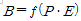
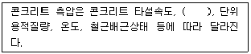
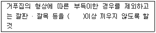

건설안전산업기사 (2017-09-23 기출문제)
1과목: 산업안전관리론
1. 학습지도 중 구안법(Project Method)의 4단계 순서로 옳은 것은?
- 계획 → 목적 → 수행 → 평가
- 계획 → 수행 → 목적 → 평가
- 목적 → 수행 → 계획 → 평가
- 목적 → 계획 → 수행 → 평가
(정답률: 71%)

2. 산업안전보건법령상 사업주가 근로자에 대하여 실시하여야 하는 교육 중 특별안전 · 보건교육의 대상 작업 기준으로 틀린 것은?
- 동력에 의하여 작동되는 프레스기계를 3대 이상보유한 사업장에서 해당 기계로 하는 작업
- 1톤 미만의 크레인 또는 호이스트를 5대 이상 보유한 사업장에서 해당 기계로 하는 작업
- 굴착면의 높이가 2m 이상이 되는 암석의 굴착작업
- 전압이 75V인 정전 및 활선작업
(정답률: 68%)
3. 적응기제(Adjustment Mechanism) 중 방어적 기제에 해당하는 것은?
- 고립
- 퇴행
- 억압
- 보상
(정답률: 72%)
4. 산업안전보건법령상 다음 안전 ·보건표지의 종류로 옳은 것은?
- 산화성물질 경고
- 폭발성물질 경고
- 부식성물질 경고
- 인화성물질 경고
(정답률: 87%)
5. 산업안전보건법령상 자율안전확인대상에 해당하는 방호장치는?
- 압력용기 압력방출용 파열관
- 가스집합 용접장치용 안전기
- 양중기용 과부하방지장치
- 방폭구조 전기기계 · 기구 및 부품
(정답률: 60%)
6. 안전모에 있어 착장체의 구성요소가 아닌 것은?
- 턱끈
- 머리고정대
- 머리받침고리
- 머리받침끈
(정답률: 66%)
7. 리더십에 대한 설명 중 틀린 것은?
- 조직원에 의하여 선출된다.
- 지휘의 형태는 민주주의적이다.
- 조직원과의 사회적 간격이 넓다.
- 권한의 근거는 개인의 능력에 의한다.
(정답률: 75%)
8. 기업의 산업재해에 대한 과거와 현재의 안전성적을 비교, 평가한 점수로 안전관리의 수행도를 평가하는데 유용한 것은?
- Safe-T-Score
- 평균강도율
- 종합재해지수
- 안전활동률
(정답률: 77%)
9. 레윈(Lewin. K)의

이론에 대한 설명으로 옳은 것은?- B : 인간의 행동
- f : 인간관계, 작업환경
- P : 적성
- E : 심신상태, 성격, 지능, 연령
(정답률: 71%)
10. O.J.T(On the Job Training)의 특징 중 틀린 것은?
- 직장의 실정에 맞게 실제적 훈련이 가능하다.
- 훈련과 업무의 계속성이 끊어지지 않는다.
- 훈련의 효과가 곧 업무에 나타나며, 훈련의 개선이 용이하다.
- 다수의 근로자들에게 조직적 훈련이 가능하다.
(정답률: 81%)
11. 무재해운동을 추진하기 위한 세 기둥이 아닌 것은?
- 관리감독자의 적극적 추진
- 소집단 자주활동의 활성화
- 전 종업원의 안전요원화
- 최고경영자의 경영자세
(정답률: 69%)
12. 학습의 전이에 영향을 주는 조건이 아닌 것은?
- 학습자의 지능 원인
- 학습자의 태도 요인
- 학습장소의 요인
- 선행학습과 후행학습간 시간적 간격의 원인
(정답률: 65%)
13. 눈으로는 작업 내용을 보고 손과 발로는 습관적으로 작업을 하고 있지만 머릿속에는 고민이나 공상으로 가득 차 있어섯 작업에 필요한 주의력이 점차 약화되고 작업자가 눈으로 보고 있는 작업 상황이 의식에 전달되지 않는 상태를 의미하는 것은?
- 의식의 과잉
- 의식의 단절
- 의식의 우회
- 의식수전의 저하
(정답률: 71%)
14. 재해발생의 주요원인 중 불안전한 행동이 아닌 것은?
- 불안전한 적재
- 불안전한 설계
- 권한 없이 행한 조작
- 보호구 미착용
(정답률: 66%)
15. 사업장에서 발행한 990회 사고 중 사망재해가 3건이었다면 하인리히의 재해구성비율에 따를 경우 경상이 예상되는 발생 건수는?
- 60
- 87
- 120
- 330
(정답률: 71%)
16. 브레인 스토밍(Brain Storming)의 4원칙에 해당하는 것은?
- 점검정비
- 본질추구
- 목표달성
- 자유분방
(정답률: 63%)
17. 산업안전보건위원회의 근로자위원 구성 기준 중 틀린 것은?
- 근로자대표
- 해당 사업의 대표자가 지명하는 9명 이내의 해당 사업장 부서의 장
- 명예산업안전감독관이 위촉되어 있는 사업장의 경우 근로자대표가 지명하는 1명 이상의 명예산업안전감독관
- 근로자대표가 지명하는 9명 이내의 해당 사업장의 근로자
(정답률: 61%)
18. 경보기가 울려도 전철이 오기까지 아직 시간이 있다고 스스로 판단하여 건널목을 건너다가 사고를 당한 것은 무엇에 의한 것인가?
- 생략행위
- 근도반응
- 억측판단
- 초조반응
(정답률: 83%)
19. 강도율이 5.5이라 함은 연 근로시간 몇 시간 중 재해로 인한 근로손실이 110일 발생하였음을 의미하는가?
- 10000
- 20000
- 50000
- 100000
(정답률: 57%)
20. 맥그리거(McGregor)의 Y이론의 관리처방에 해당하는 것은?
- 목표에 의한 관리
- 권위주의적 리더십 확립
- 경제적 보상체제의 강화
- 면밀한 감독과 엄격한 통제
(정답률: 67%)
2과목: 인간공학 및 시스템안전공학
21. 심장의 박동주기 동안 심근의 전기적 신호를 피부에 부착한 전극들로부터 측정하는 것으로 심장이 수축과 확장을 할 때, 일어나는 전기적 변동을 기록한 것은?
- 뇌전도계
- 근전도계
- 심전도계
- 안전도계
(정답률: 78%)
22. 감지되는 모든 우발상황에 대하여 적절한 행동을 취하게 완전히 프로그램화되어 있으며, 인간은 주로 감시, 프로그램, 정비유지 등의 기능을 수행하는 인간 – 기계 체계는?
- 수동 체계
- 자동화 체계
- 반자동화 체계
- 기계화 체계
(정답률: 65%)
23. 위험조정을 위해 필요한 방법으로 틀린 것은?
- 위험보류(retention)
- 위험감축(reduction)
- 위험회피(avoidance)
- 위험확인(confirmation)
(정답률: 50%)
24. 결함수분석법에 관한 설명으로 틀린 것은?
- 잠재위험을 효율적으로 분석한다.
- 연역적 방법으로 원인을 규명한다.
- 정성적 평가보다 정량적 평가를 먼저 실시한다.
- 복잡하고 대형화된 시스템의 분석에 사용한다.
(정답률: 66%)
25. 부품을 작동하는 성능이 체계의 목표달성에 긴요한 정도를 고려하여 우선순위를 설정하는 원칙은?
- 중요도의 원칙
- 사용빈도의 원칙
- 기능성의 원칙
- 사용순서의 원칙
(정답률: 60%)
26. FTA에서 사용하는 논리기회 중 3개 이상의 입력현상 중 2개가 발생할 경우 출력이 되는 것은?
- 조합 AND 게이트
- 배타적 OR 게이트
- 우선적 AND 게이트
- 위험지속 AND 게이트
(정답률: 57%)
27. 복권추첨을 할 때 복권에 당첨되지 않을 확률과 당첨될 확률이 각각 0.9, 0.1 이라면, 정보량은 약 몇 bits 인가?
- 0.47
- 0.50
- 3.32
- 3.47
(정답률: 30%)
28. 원자력 산업과 같이 이미 상당한 안전이 확보되어 있는 장소에서 관리, 설계, 생산, 보전 등 광범위하고 고도의 안전달성을 목적으로 하는 시스템 해석법은?
- ETA
- MORT
- FHA
- FMECA
(정답률: 63%)
29. 물품을 일정시간 가동시켜 결함을 찾아내고 제거하여 고장율을 안정시키는 기간은?
- 우발고장 기간
- 말기고장 기간
- 초기고장 기간
- 마모고장 기간
(정답률: 63%)
30. 일반적을 사람의 청력으로 감지할 수 있는 주파수 영역은?
- 0 ~ 20 Hz
- 20 ~ 20000 Hz
- 20000 ~ 50000 Hz
- 50000 ~ 100000 Hz
(정답률: 76%)
31. 가청 주파수내에세 사람의 귀가 가장 민감하게 반응하는 주파수 대역은?
- 20 Hz ~ 20000 Hz
- 50 Hz ~ 15000 Hz
- 100 Hz ~ 10000 Hz
- 500 Hz ~ 3000 Hz
(정답률: 61%)
32. 부품검사 작업자가 한 로트 당 5000 개를 검사하여 400 개의 부적합품을 검출하였다. 실제 로트 당 1000 개의 부적합품이 있었다고 가정할 때, 휴먼에러 확률(HEP)은?
- 0.12
- 0.22
- 0.32
- 0.42
(정답률: 47%)
33. 시스템을 성공적으로 작동시키는 경로의 집합을 시스템 신뢰도 측면에서는 무엇이라 하는가?
- cut set
- ture set
- path set
- module set
(정답률: 65%)
34. 실내면의 추천반사율이 낮은 것에서부터 높은 순으로 올바르게 배열된 것은?
- 바닥＜ 가구＜ 벽＜ 천장
- 바닥＜ 벽＜ 가구＜ 천장
- 천장＜ 가구＜ 벽＜ 바닥
- 천장＜ 벽＜ 가구＜ 바닥
(정답률: 65%)
35. 인간 – 기계 체계에서 시스템 활동의 흐름과정을 탐지 분석하는 방법이 아닌 것은?
- 가동분석
- 운반공정분석
- 신뢰도분석
- 사무공정분석
(정답률: 51%)
36. 반사율이 80% 인 종이에 인쇄된 글자의 반사율이 20%라 하면, 대비는 몇 % 인가?
- -75%
- -33%
- 25%
- 75%
(정답률: 51%)
37. 광원으로부터의 직사 휘광을 줄이기 위한 처리방법으로 틀린 것은?
- 가리개 및 차양을 사용한다.
- 광원을 시선에서 멀리 위치시킨다.
- 광원의 휘도를 줄이고 수를 늘린다.
- 휘광원의 주위를 밝게 하여 광도비를 높인다.
(정답률: 61%)
38. fail-safe 의 종류가 아닌 것은?
- 중복구조
- 상하 경감구조
- 교대구조
- 다경로 하중 구조
(정답률: 42%)
39. 인체계측자료를 응용하여 제품을 설계하고자 할 때, 제품과 적용기준으로 틀린 것은?
- 공구 – 평균치 설계기준
- 출입문 - 최대 집단치 설계기준
- 안내 데스크 – 평균치 설계기준
- 선반 높이 – 최대 집단치 설계기준
(정답률: 74%)
40. 조종 장치의 촉각적 암호화를 위하여 고려하는 특성이 아닌 것은?
- 형상
- 무게
- 크기
- 표면 촉감
(정답률: 71%)
3과목: 건설시공학
41. 한중 콘크리트 공사에 콘크리트의 물-결합재비는 원칙적으로 얼마 이하이어야 하는가?
- 50%
- 55%
- 60%
- 65%
(정답률: 72%)
42. 혼화재(混和材)에 관한 설명으로 옳지 않은 것은?
- 시멘트량의 1% 정도 이하로 배합설계에서 그 자체의 용적을 무시한다.
- 종류로는 플라이애시, 고로슬래그, 실리카퓸 등이 있다.
- 포졸란 반응이 있는 것은 플라이애시, 고로슬래그, 규산백토 등이 있다.
- 인공산으로는 플라이애시, 고로슬래그, 소성점토 등이 있다.
(정답률: 69%)
43. 강재면에 강필로 볼트구멍 위치와 절단 개소 등을 그리는 일은?
- 원척도
- 본뜨기
- 금매김
- 변형바로잡기
(정답률: 68%)
44. 연약한 점성토 지반을 굴착할 때 주로 발생하며 흙막이 바깥에 있는 흙이 안으로 밀려들어와 흙막이가 파괴되는 현상은?
- 파이핑(Piping)
- 보일링(Boiling)
- 히빙(Heaving)
- 캠버(Camber)
(정답률: 70%)
45. 콘크리트에 사용하는 AE제의 특징이 아닌 것은?
- 내구성, 수밀성 증대
- 블리딩 현상 증가
- 단위수량 감소
- 건조수축 감소
(정답률: 68%)
46. 기성콘크리트 말뚝시공에 관한 설명으로 옳지 않은 것은?
- 말뚝중심간격은 2.5D이상 또한 750mm이상으로 한다.
- 적재 장소는 시공장소와 가깝고 배수가 양호하고 지반이 견고한 곳이어야 한다.
- 2단 이하로 저장하고 말뚝받침대는 동일선상에 위치하여야 파손이 적다.
- 시공순서는 주변 다짐효과를 높이기 위하여 주변부에서 중앙부로 박는다.
(정답률: 68%)
47. 거푸집 공사 중 콘크리트의 측압에 관한 설명으로 옳지 않은 것은?
- 치어붓기 속도가 빠를수록 측압이 크다.
- 묽은 콘크리트일수록 측압이 작다.
- 거푸집의 수평단면이 작을수록 측압이 작다.
- 철골 또는 철근량이 많을수록 측압은 작아진다.
(정답률: 61%)
48. 건설공사 완료 후 보수 및 재시공을 보증하기 위하여 공사발주처 등에 예치하는 공사금액의 명칭은?
- 입찰보증금
- 계약보증금
- 지체보증금
- 하자보증금
(정답률: 80%)
49. 거푸집 공사에서 거푸집 검사 시 받침기둥(지주의 안전하중)검사와 가장 거리가 먼 것은?
- 서포트의 수직 여부 및 간격
- 폼타이 등 조임철물의 재질
- 서포트의 편심, 처짐 및 나사의 느슨함 정도
- 수평연결대 설치 여부
(정답률: 64%)
50. 네트워크 공정표의 구성요소 중 부주공정(Semi-Critical Path)에 관한 설명으로 옳지 않은 것은?
- 여유시간이 상대적으로 적은 공정을 의미한다.
- 공정이 부분적 또는 불연속적으로 발생한다.
- 공기단축 시 관리대상에서는 제외된다.
- 주공정화 할 가능성이 많은 공정이다.
(정답률: 60%)
51. 토공상의 굴착기계 용도에 관한 설명으로 옳지 않은 것은?
- 백호는 기계보다 낮은 곳을 굴착하는데 사용한다.
- 파워쇼벨은 기계보다 높은 곳을 굴착하는데 사용한다.
- 드래그라인은 기계보다 낮은 곳의 흙을 긁어모으는데 사용한다.
- 클램쉘은 기계보다 높은 곳의 흙과 자갈을 긁어내리는데 사용한다.
(정답률: 72%)
52. 무량판구조에 사용되는 특수상자모양의 기성재 거푸집은?
- 터널폼
- 유로폼
- 슬라이딩폼
- 워플폼
(정답률: 64%)
53. 철근콘크리트공사에서의 철근이음에 관한 설명으로 옳지 않은 것은?
- 철근의 이음위치는 되도록 응력이 큰 곳을 피한다.
- 일반적으로 이음을 할 때는 한 곳에서 철근 수의 반 이상을 이어야 한다.
- 철근이음에는 겹침이음, 용접이음, 기계적이음 등이 있다.
- 철근이음은 힘의 전달이 연속적이고, 응력집중 등 부작용이 생기지 않아야 한다.
(정답률: 80%)
54. 공상에 필요한 표준시방서의 내용에 포함되지 않은 사항은?
- 재료에 관한 사항
- 공법에 관한 사항
- 공사비에 관한 사항
- 검사 및 시험에 관한 사항
(정답률: 59%)
55. 공사계약서 내용에 포함되어야 할 내용과 가장 거리가 먼 것은?
- 공사내용(공사명,공사장소)
- 재해방지대책
- 도급금액 및 지불방법
- 천재지변 및 그 외의 불가항력에 의한 손해부담
(정답률: 60%)
56. 모래의 부피증가계수(L)가 15%이고, 굴토량이 261m3라면 잔토처리량은?
- 300 m3
- 250 m3
- 231 m3
- 200 m3
(정답률: 44%)
57. 건축생산 조직에 관한 설명으로 옳은 것은?
- CM은 시공자가 직접 공사의 타당성조사, 설계, 시공, 사용 등을 포함하는 건설공사 전 과정을 조정하는 것이다.
- EC화는 종래의 단순한 시공업과 비교하여 건설사업 전반에 걸쳐 종합, 기획, 관리하는 업무 영역의 확대를 말한다.
- 발주자외 직접 공사계약을 하는 업자를 하도급자라고 한다.
- 감리자란 시공자의 위탁을 받아 공사의 시공과정을 검사·승인하는 자를 말한다.
(정답률: 50%)
58. L.W(Labiles Wasserglass)공법에 관한 설명으로 옳지 않은 것은?
- 물유리용액과 시멘트 현탁액을 혼합하면 규산수화물을 생성하여 겔(gel)화하는 특성을 이용한 공법이다.
- 지반강화와 차수목적을 얻기 위한 약액주입공법의 일종이다.
- 미세공극의 지반에서도 그 효과가 확실하여 널리 쓰인다.
- 배합비 조절로 겔타임 조절이 가능하다.
(정답률: 52%)
59. 철근가공에 관한 설명으로 옳지 않은 것은?
- 대지의 여유가 없어도 정밀도 확보를위해 현장가공을 우선적으로 고려한다.
- 철근 가공은 현장가공과 공장가공으로 나눌 수 있다.
- 공장가공은 현장가공에 비해 절단손실을 줄일 수 있다.
- 공장가공은 현장가공보다 운반비가 높은 경우가 많다.
(정답률: 73%)
60. 철골공사에 관한 설명으로 옳지 않은 것은?
- 현장용접 시 기온과 관계없이 부재를 예열하지 않는다.
- 세우기 장비는 철골구조의 형태 및 총중량을 고려한다.
- 철골 세우기는 가조립 후 변형 바로잡기를 한다.
- 가조립 시 최소 2개 이상 가볼트 조임한다.
(정답률: 68%)
4과목: 건설재료학
61. 플라스틱의 특성에 관한 설명으로 옳지 않은 것은?
- 전기절연성이 양호하다.
- 내열성 및 내후성이 강하다.
- 착색이 자유롭고 높은 투명성을 가질 수 있다.
- 내약품성이 있고 접착성이 우수하다.
(정답률: 71%)
62. 콘크리트ㅡ 인장강도는 압축강도의 대략 얼마 정도인가?
- 2배
- 1배
- 1/10
- 1/30
(정답률: 69%)
63. 금성성형 가공제품 중 천장, 벽 등의 모르타르바름 바탕용으로 사용되는 것은?
- 인서트
- 메탈라스
- 와이어클리퍼
- 와이어로프
(정답률: 65%)
64. 고온소성의 무수석고를 특별히 화학처리한 것으로 킨스시멘트라고도 하는 것은?
- 혼합석고 플라스터
- 보드용석고 플라스터
- 경석고 플라스터
- 돌로마이트 플라스터
(정답률: 63%)
65. 수분 상승으로 인하여 큰크리트의 표면에 떠올라 얇은 피막으로 되어 침적한 물질은?
- 레인턴스
- 폴리머
- 마그네시아
- 포졸란
(정답률: 61%)
66. 보통벽돌에 관한 설명으로 옳지 않은 것은?
- 일반적으로 잘 구워진 것일수록 치수가 작아지고 색이 옅어지며, 두드리면 탁음이 난다.
- 건축용 점토소성벽돌의 적색은 원료의 산화철성분에서 기인한다.
- 보통벽돌의 기본치수는 190×90×57mm이다.
- 진흙을 빚어 소성하여 만든 벽돌로서 점토벽돌이라고도 한다.
(정답률: 65%)
67. 다음 단열재료 중 가장 높은 온도에서 사용할 수 있는 것은?
- 세라믹 파이버
- 암면
- 석면
- 글래스울
(정답률: 58%)
68. 다음 중 천연석에 해당되지 않는 것은?
- 트래버틴
- 대리석
- 화강석
- 테라죠
(정답률: 61%)
69. 시멘트의 안정성 시험에 해당하는 것은?
- 슬럼프 시험
- 브레인법
- 길모아 시험
- 오토클레이브 팽창도 시험
(정답률: 60%)
70. 다음 중 20°C 기건상태에서 단열성이 가장 우수한 것은?
- 화강암
- 판유리
- 알루미늄
- ALC
(정답률: 65%)
71. 다음 중 골재로 사용할 수 없는 것은?
- 락크 울(rock wool)
- 질석(vermiculite)
- 펄라이트(perlite)
- 화산자갈(volcanic gravel)
(정답률: 53%)
72. 어떤 목재의 건조 전 질량이 200g, 건조 후 전건질량이 150g 일 때, 이 목재의 함수율은?
- 10%
- 25%
- 33.3%
- 66.7%
(정답률: 49%)
73. 합판에 관한 설명으로 옳은 것은?
- 곡면가공 시 균열이 발생하기 때문에 곡면가공이 불가능하다.
- 함수율 변화에 따른 팽창 · 수축의 발향성이 크다.
- 표면가공법으로 흡음효과를 낼 수 있다.
- 내수성이 매우 작기 때문에 내장용으로만 사용된다.
(정답률: 50%)
74. 굳지 않은 콘크리트의 성질을 나타낸 용어에 관한 설명으로 옳지 않은 것은?
- 컨시스턴시(Consistency) - 콘크리트에 사용되는 물의 양에 의한 콘크리트 반죽의 질기
- 워커빌리티(Workability) - 콘크리트의 부어넣기 작업 시의 작업 난이도 및 재료분리에 대한 저항성
- 피니셔빌리티(Finishability) - 굵은골재의 최대치수, 잔골재율, 잔골재의 입도 등에 따른 마무리 작업의 난이도
- 플라스티시티(Plasticity) - 콘크리트를 펌핑하여 부어넣는 위치까지 이동시킬 때의 펌핑성
(정답률: 57%)
75. 공기 중의 탄산가스와 화학반응을 일으켜 경화하는 미장재료는?
- 경석고 플라스터
- 시멘트 모르타르
- 돌로마이트 플라스터
- 혼합석고 플라스터
(정답률: 61%)
76. 대리석의 성질과 용도에 관한 설명으로 옳은 것은?
- 석질이 치밀하고, 판석으로서 지붕 외벽 등에 사용되며 비석, 숫돌로도 이용된다.
- 조적재, 기초석재 등으로 주로 쓰인다.
- 내화도는 높으나 조잡하여 경량골재, 내화재 등에 사용한다.
- 열, 산에는 약하지만 외관이 미려하므로 장식용으로 사용된다.
(정답률: 69%)
77. 풍화된 세멘트를 사용했을 경우에 관한 설명으로 옳지 않은 것은?
- 응결이 늦어진다.
- 수화열이 증가한다.
- 비중이 작아진다.
- 강도가 감소된다.
(정답률: 58%)
78. 알루미늄의 용도로 가장 적합하지 않은 것은?
- 창호철물
- 콘크리트에 면하는 마감재
- 새시
- 라디에이터
(정답률: 64%)
79. 마루판으로 사용할 때 적합하지 않은 것은?
- 코펜하겐 리브
- 플로어링 보드
- 파키트 블록
- 파키트 패널
(정답률: 72%)
80. 에폭시 도장에 관한 설명으로 옳지 않은 것은?
- 내마모성이 우수하고 수축, 팽창이 거의 없다.
- 내약품성, 내수성, 접착력이 우수하다.
- 자외선에 특히 강하여 외부에 주로 사용한다.
- Non-Slip 효과가 있다.
(정답률: 61%)
5과목: 건설안전기술
81. 굴착공사에서 굴착 깊이가 5m, 굴착 저면의 폭이 5m인 경우, 양단면 굴착을 할 때 굴착부상단면의 폭은? (단, 굴착면의 기울기는 1:1로 한다.)
- 10m
- 15m
- 20m
- 25m
(정답률: 59%)
82. 강관을 사용하여 비계를 구성하는 경우의 준수사항으로 옳지 않은 것은?
- 비계기둥의 간격은 띠장 방향에서는 1.5m 이상 1.8m 이하, 장선방향에서는 1.5m 이하로 할 것
- 비계기둥 간의 적재하중은 300㎏을 초과하지 않도록 할 것
- 띠장의 간격은 1.5m 이하로 설치할 것
- 첫 번째 띠장은 지상으로부터 2m 이하의 위치에 설치할 것
(정답률: 59%)
83. 차량계 건설기계 중 도로포장용 건설기계에 해당되지 않는 것은?
- 아스팔트 살포기
- 아스팔트 피니셔
- 콘크리트 피니셔
- 어스오거
(정답률: 65%)
84. 발파작업에 종사하는 근로자가 발파 시 준수하여야 할 기준으로 옳지 않은 것은?
- 벼락이 떨어질 우려가 있는 경우에는 화약 또는 폭약의 장전 작업을 중지하고 근로자들을 안전한 장소로 대피시켜야 한다.
- 근로자가 안전한 거리에 피난할 수 없는 경우에는 전면과 상부를 견고하게 방호한 피난장소를 설치하여야 한다.
- 전기뇌관 외에것에 의하여 점화 후 장정된 화약류의 폭발여부를 확인하기 곤란한 경우에는 점화한 때부터15분 이내에 신속히 확인하여 처리하여야 한다.
- 얼어붙은 다이나마이트는 화기에 접근시키거나 그 밖의 고열물에 직접 접촉시키는 등 위험한 방법으로 융해되지 않도록 한다.
(정답률: 70%)
85. 다음 ( )안에 들어갈 내용으로 옳은 것은?

- 골재의 형상
- 콘크리트 강도
- 박리제
- 타설높이
(정답률: 67%)
86. 인력에 의한 굴착작업 시 준수해야할 사항으로 옳지 않은 것은?
- 지반의 종류에 따라서 정해진 굴착면의 높이와 기울기로 진행시켜야 한다.
- 굴착면 및 굴착심도 기준을 준수하여 작업 중 붕괴를 예방하여야 한다.
- 굴착토사나 자재 등을 경사면 및 토류벽 천단부 주변에 쌓아두어 하중을 보강한다.
- 용수 등의 유입수가 있는 경우 배수시설을 한 뒤에 작업을 하여야 한다.
(정답률: 73%)
87. 고소작업대를 설치 및 이동하는 경우의 준수사항으로 옳지 않은 것은?
- 바닥과 고소작업대는 가능하면 수평을 유지하도록 할 것
- 이동하는 경우에는 작업대를 가장 높게 올릴 것
- 이동통로의 요철상태 또는 장애물의 유무 등을 확인 할 것
- 갑작스러운 이동을 방지하기 위하여 아웃트리거 또는 브레이크 등을 확실히 사용할 것
(정답률: 75%)
88. 크레인의 와이어로프가 일정 한계 이상 감기지 않도록 작동을 자동으로 정지시키는 장치는?
- 훅해지장치
- 권과방지장치
- 비상정지장치
- 과부하방지장치
(정답률: 67%)
89. 철골 작업 시 강우량에 대해 작업을 중단하는 기준으로 옳은 것은?
- 시간당 1mm 이상인 경우
- 시간당 5mm 이상인 경우
- 시간당 10mm 이상인 경우
- 시간당 15mm 이상인 경우
(정답률: 70%)
90. 파이핑(piping)현상에 의한 흙 댐(earth dam)의 파괴를 방지하기 위한 안전대책 중 옳지 않은 것은?
- 흙 댐의 하류측에 필터를 설치한다.
- 흙 댐의 상류측에 차수판을 설치한다.
- 흙 댐 내부에 점토코아(core)를 넣는다.
- 흙 댐에서 물의 침투유도 길이를 짧게 한다.
(정답률: 56%)
91. 건설산업기본법 시행령에 따른 토목공사업에 해당되는 건설 건설공사현장에서 전담안전관리자 최소 1인을 두어야 하는 공사금액의 기준으로 옳은 것은?
- 150억원 이상
- 180억원 이상
- 210억원 이상
- 250억원 이상
(정답률: 66%)
92. 공사용 가설도로에서 일반적으로 허용되는 최고 경사도는 얼마인가?
- 5%
- 10%
- 20%
- 30%
(정답률: 44%)
93. 강관비계 중 단관비계의 벽이음 및 버팀 설치 시 수직 및 수평 방향 조립간격으로 옳은 것은?
- 수직방향 : 3m, 수평방향 : 3m
- 수직방향 : 5m, 수평방향 : 5m
- 수직방향 : 6m, 수평방향 : 8m
- 수직방향 : 8m, 수평방향 : 6m
(정답률: 53%)
94. 양끝이 힌지(Hinge)인 기둥에 수직하중을 가하면 기둥이 수평방향으로 휘게 되는 현상은?
- 피로파괴
- 폭열현상
- 좌굴
- 전단파괴
(정답률: 68%)
95. 안전난간은 구조적으로 가장 취약한 지점에서 가장 취약한 방향으로 작용하는 최소 얼마 이상의 하중에 견딜 수 있는 구조이어야 하는가?
- 100 ㎏
- 150 ㎏
- 200 ㎏
- 250 ㎏
(정답률: 59%)
96. 토석의 붕괴 원인 중 외적 요인이 아닌 것은?
- 법면의 경사 증가
- 절토 및 성토 높이 증가
- 진동 및 각종 하중 작용
- 토석의 강도 저하
(정답률: 66%)
97. 다음은 산업안전보건법령 중 계단 형상으로 조립하는 거푸집 동바리에 관한 사항이다. ( )안에 들어갈 내용으로 알맞은 것은?

- 2단
- 3단
- 4단
- 5단
(정답률: 60%)
98. 철골보 인양작업 시 준수사항으로 옳지 않은 것은?
- 선회와 인양작업은 가능한 동시에 이루어지도록 한다.
- 인양용 와이어로프의 매달기 각도는 양변 60° 정도가 되도록 한다.
- 유도 로프로 방향을 잡으며 이동시킨다.
- 철골보의 와이어로프 체결지점은 부재의 1/3지점을 기준으로 한다.
(정답률: 61%)
99. 낙하물에 의한 위험의 방지를 위하여 낙하물 방지망을 설치하는 경우 수평면과의 유지각도로 옳은 것은?
- 20도 이상 30도 이하
- 30도 이상 40도 이하
- 40도 이상 45도 이하
- 45도 초과
(정답률: 68%)
100. 산업안전보건법령에 따른 크레인을 사용하여 작업을 하는 때 작업시작 전 점검사항에 해당되지 않는 것은?
- 권과방지장치 · 브레이크 · 클러치 및 운전장치의 기능
- 주행로의 상측 및 트롤리(trolley)가 횡행하는 레일의 상태
- 원동기 및 풀리(pulley)기능의 이상 유무
- 와이어로프가 통하고 있는 곳의 상태
(정답률: 57%)
구안법(Project Method)은 학생들이 주도적으로 프로젝트를 기획하고 수행하며, 그 과정에서 지식과 기술을 습득하는 학습 방법이다. 이 방법은 다음과 같은 4단계로 이루어진다.
1. 목적 설정: 학생들이 프로젝트를 통해 얻고자 하는 목표를 설정한다.
2. 계획 수립: 목표를 달성하기 위한 구체적인 계획을 수립한다.
3. 수행: 계획에 따라 프로젝트를 수행한다.
4. 평가: 수행한 결과를 평가하고, 문제점을 파악하여 개선점을 도출한다.
따라서, "목적 → 계획 → 수행 → 평가"가 옳은 순서이다.